Hi, I'm Giacomo Yong Cuomo, international student in ECE, Electrical and Computer Engigneer, from Italy.
In here, I will explain and summarise my journey to construt an autonomous RC car capable of mapping and navigating obstacles in real life.
For the rest part of the prelab, I was tasked to download Arduino IDE and setting up the board we would use for all other labs: the SparkFun RedBoard Artemis Nano.
Lab 1B
After installing an running all necessary demo code, which I analyse in detail in the next part of the report, I was tasked to setup to set up the environments used to host our Python and Jupiter Lab portion of code.
Setup newest version of Python and pip, as shown in the image below.
Setup the virtual environment "FastRobots_ble" and download the codebase ble_robot_1.2, as shown in the image below.
Load and burn the codebase to discover the MAC address, as shown in the image below.
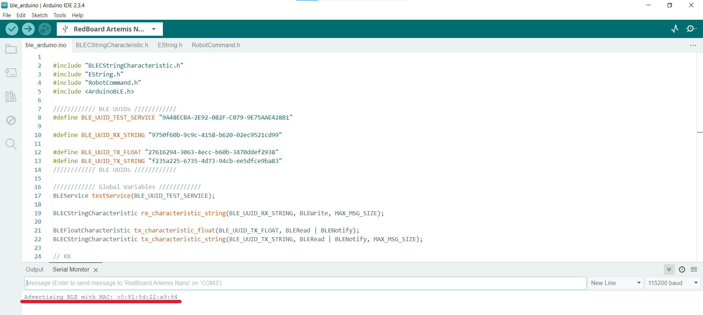
•Tasks
Lab 1A
For the first part of the lab, I run different examples from the Arduino built-in environment and some others from the RedBorad Artemis Nano environment.
In the following video, I illustrate every example tasked to run.
Lab 1B
In this second half of the lab, I was tasked to write different commands and functionsd in both Arduino and Jupyter Lab to showcase the functionality of Bluetooth connection between Artemis Nano and our pc.
Here are the main tasks completed with explanation, supported by code snippets and images of the results.
ECHO command
In this section, I was tasked to code the ECHO command for our microncontroller. This program should output a modified version of whatever the user sends to
the the robot.
/* ECHO */
case ECHO:
char char_arr[MAX_MSG_SIZE];
// Extract the next value from the command string as a character array
success = robot_cmd.get_next_value(char_arr);
if (!success) return;
tx_estring_value.clear();
tx_estring_value.append("Robot Says -> ");
tx_estring_value.append(char_arr);
tx_characteristic_string.writeValue(tx_estring_value.c_str());
Serial.print("Robot Says -> ");
Serial.println(tx_estring_value.c_str());
break;
As the code shows, the output will be in the form "Robot says ->" + user input. The communication is handled by the Python communication via Bluetooth.
SEND_THREE_FLOATS and GET_TIME_MILLIS commands
In this section, I developed the code for sending three float points to the robot. This command does not reply to Python like ECHO, but
instead it stores the values sent internally in the Artemis. Code shown below, as well as an image from the Serial monitor outputting the 3 values sent.
/* SEND_THREE_FLOATS */
case SEND_THREE_FLOATS:
float float_a, float_b, float_c;
// Extract the next value from the command string as an integer
success = robot_cmd.get_next_value(float_a);
if (!success) return;
// Extract the next value from the command string as an integer
success = robot_cmd.get_next_value(float_b);
if (!success) return;
// Extract the next value from the command string as an integer
success = robot_cmd.get_next_value(float_c);
if (!success) return;
Serial.print("Three Floats: ");
Serial.print(float_a);
Serial.print(", ");
Serial.print(float_b);
Serial.print(", ");
Serial.println(float_c);
break;
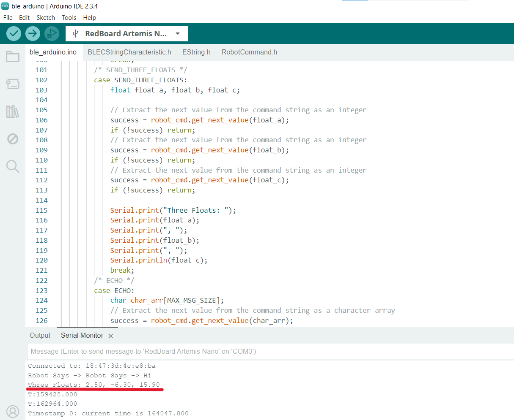
Additionally, I was tasked to write the GET_TIME_MILLIS command. When called in Python, it will receive the time in milliseconds in that instance.
The format of the output is "T:123456", where the numbers represent the milliseconds the Arduino has run for in float. The following code illustrate its functionality.
Next, I was tasked to create a function to handle outputs from Arduino back in Python. This function went through several iterations, as the next tasks will use this function to show the robot's data.
The first iteration of the function was just designed to take a response and print it directly. For future iterations, I printed both time and temperature measurements, implementing an alternative print for when temperature is recorded.
Here is the full code showing its functionality.
#Notification Handler
def notification_handler(uuid, notification):
s = ble.bytearray_to_string(notification)
#Only if temperature is recorded
if ("|" in s):
pieces = s.split("|")
print("Timestamp " + pieces[0] + ": current time is " + pieces[1] + " and current temperature is " + pieces[2] + " in F.")
else:
print(s)
This function is going to be used for all next tasks I will talk about. For all of them, to start checking for robot's output we just run the function ble.start_notify(ble.uuid['RX_STRING'], notification_handler) and we end the receiving by running the function
ble.stop_notify(ble.uuid['RX_STRING']). Both functions check ble.uuid['RX_STRING'] for data sent from the robot as it is the receiver. From the Arduino side, we are sending it through the transmitter of the Bluetooth.
To immediately test out Notification Handler function, I was tasked to receive the time from GET_TIME_MILLIS. Here is the Python section that shows it.
TIME_LOOP command
The next task I developed was the command TIME_LOOP. Its functionality is to send to Python timestamps from the moment they were requested for a period of time of my choice, all through the Notification Handler .
The period of time I decided to collect data for was 3 seconds, collecting a total of 81 timestamps. This implies that the program collects 27 messages/second. One particular occurence I found in doing this task was that sometimes the
number of timestamps were more than 81 and sometimes less. I think this depended on the traffic of the Bluetooth, if the robot was running for a while and especially if other commands were requested before.
Here is the code for TIME_LOOP and its output on Python.
/* TIME_LOOP */
case TIME_LOOP: {
unsigned long start_time = millis();
int count = 0;
while (millis() - start_time < timestamps_duration){
tx_estring_value.clear();
tx_estring_value.append("Timestamp ");
tx_estring_value.append(count);
tx_estring_value.append(": current time is ");
tx_estring_value.append((float) millis());
tx_characteristic_string.writeValue(tx_estring_value.c_str());
Serial.println(tx_estring_value.c_str());
count += 1;
}
break;
}
STORE_LOOP and SEND_TIME_DATA commands
In this next section, I was tasked to store timestamps into an array in Arduino and then send it when requested. To do so, I preferred to implement two different commands, one to store and one to send.
My reasoning for doing this is because, in a later task, I will need to implement the same system for also temperature readings. By modulating the two actions in different commands, I could store temperature readings by simply adding another array in the STORE_LOOP command.
I will explain more about this in the next section.
One critical change I made from this moment on was switch from milliseconds to microseconds under suggestion of the TA in lab. This is because I noticced I was hitting the boundary of the array extremely quickly, despite it being very large.
I will further discuss my conclusions and some possible solution in the Discussion section.
The two images below show the functionality of both commands.
GET_TEMP_DATA command
The final task I needed to develop was to code the command GET_TEMP_DATA. To implement it, I declared a new array to store temperature datas and, as I add timestamps in its array, I started adding temperature measurements at the same time.
This can be seen from the code developed in STORE_LOOP. Differently from SEND_TIME_DATA, GET_TEMP_DATA sends informations to the Notification Handler in a particular format: "count|time|temp" where "|" is used as delimiter to handle the data.
The code and image below show how the command works.
/* SEND_TEMP_DATA */
case SEND_TEMP_DATA: {
for (int i = 0; i < array_size; i++) {
if (timestamps[i] == 0) break;
tx_estring_value.clear();
tx_estring_value.append(i);
tx_estring_value.append("|");
tx_estring_value.append(timestamps[i]);
tx_estring_value.append("|");
tx_estring_value.append(tempstamps[i]);
tx_characteristic_string.writeValue(tx_estring_value.c_str());
Serial.println(tx_estring_value.c_str());
}
break;
}
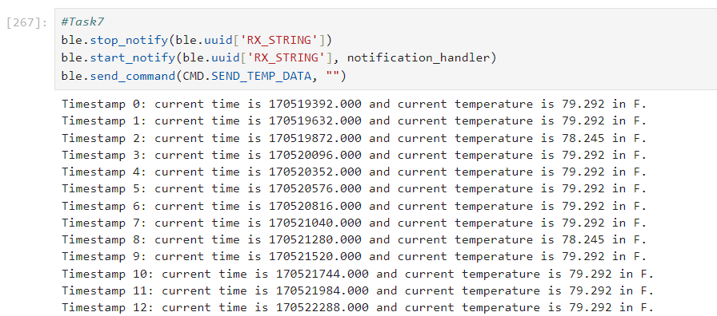
•Discussion
This lab was very instructive on how the Bluetooth communication between the robot and our pc works and how they will communicate data in the future labs.
During the lab, I was tasked to send data from Arduino to Python both directly in real time but also through a stored array at run time. Those two methods are extremely different. Despite the first one being very fast, it pales in comparison as the second one filled the array almost immediately.
The reason for this is because the direct sending of data happens at real time, delaying due to the Serial Communication through Bluetooth. This communication is effective when we would like to see replies in real time like for the ECHO command.
In the other hand, storing the data at run time is way faster as it doesn't delay due to Serial. This can be useful if we are measuring EMU or Time-of-Flight data for use for future adjustments and commands, as in this case having more data to compare may be helpful.
In regard of the rate at which the Artemis Nano stores data in Arduino, I noticed an issue. When I first started storing timestamps, the array filled up of data extremely fast.
Additionally, one thing I realised was that by registering the timestamps in milliseconds many entries of the array were the exact same number, as it can be seen by the following image.
To fix this, under suggestion of the TA, I decided to instead register the data in microseconds as it would give me more informations. Furthermore, it would avoid the issue of filling up the array so rapidly.
By talking to the TA, I realised that if I wanted to avoid the array to fill up I could calculate the necessary dimension based on the RAM space of the Artemis Nano and the memory used by Arduino to compute.
The Artemis Nano has 384 kB of RAM. A float takes up 4 bytes of RAM, so we can calculate that 96,000 datapoints can be stored in it (384kB/4B). Since I am storing both timestamps and temperature measurements, this is roughly 48,000 datapoints per measurement.
However, we need to take into account also each string we send as they contain a certain number of bytes per character. This means I have to consider even less than 48,000 that can be sent to the notification handler before RAM runs out.
Lab 2
•Lab Tasks
Set Up the IMU
To begin the lab, I had to install the necessary library to run the IMU and connect it to the board.
By running the IMU example code, we notice that by moving the IMU around different values for either the Accelerometer or Gyroscope change.
Within the code, it is important to understand the variable AD0_VAL which is set to 1 by default. When set to 1, it allows communication through the SPI channel, which is impossible when set to 0.
The video and image below show the functionality of the IMU.
Accelerometer
For the first part of the lab, I tested the accuracy and functionality of the Accelerometer.
The following set of images show the pitch and roll taken before any type of calibration or low pass filtering.
What we can see is that those measurements are quite noisy, which motivates us to check the Fourier Transform for each and decide a cut of frequency for our low pass filter.
The two Fourier Transforms tell us that the bets possible cut off frequency is 20Hz.
We then use this frequency and the following two formulas to calculate a value for alpha of 0.9921.
Now we can apply a Low Pass Filter to both pitch and roll and get more precised measurements.
The most different aspects of these measurements, compared to the one made from the Accelerometer, is that they are way less noise.
The drawback is that they are subject to not exactly aligh with the normal angles. This can be seen from the pitch as, although the relative angle is a change in 90 degrees in both direction, the initial position is not at the zero angles.
To mitigate this, we can try applying a complimentary filter to combine the initial precision of the Accelerometer and the noisyless effect of the Gyroscope. This applies only to pitch and roll as the Accelerometer cannot influence yaw in any way.
As the images show, the pitch and roll are very precise although the initial position problem was not exactly fixed. I suspect that the cause of this issue is me not taking the measurements correctly, but it's worth noting it for future implementations.
Sample Data
Throughout the entirety of the lab, I implemented sme design choices that definetely influenced the efficiency of the code.
The first very important decision taken was between calculating data at run time, by storing it in arrays, or in real time, by sending it directly via Bluetooth.
Although I initally tested all functionality by calculating the angles in real time, I decided to instead store all data in array structs (STORE_IMU) and send it via Bluetooth using another command (SEND_IMU). Both commands are here reported.
This allowed me to take measurements at a higher rate (roughly 1200 per second) and therefore have more precise graphs when measuring changes in pitch, roll and yaw.
Another important decision I made was to store each measured value in different struct arrays. This, although expensive in terms of RAM as each array takes a certain amount of memory, allowed me more modularity and limited the risk of filling the array with data.
Lastly, as viewed by any image posted before, I decided and was able to gather IMU data for 10sec, with the draw back of a longer sending time as it is computational expensive to send roughly 12000 data points, based on the before mentioned sampling rate.
Record a Stunt
Lab 3
•Prelab
I2C Sensor Address and Conflict with Two ToFs Sensors
From the beginning of the lab, by running the example code in Example1_wire_I2C, I found the I2C address associated to one of the ToF sensor we have.
The example code showed that the sensor has address 0x29 instead of the default 0x52. This is because, when connected and running, the LSB is continuously toggled between read and write with consequence
of having the I2C address bit-shifted by one to the right.
Another challenge to face regarding I2C addresses is that both ToF sensors have the same address, so we need to change address to one of them to differentiate their measurements and to be able to run them concurrently.
To do so, we hard-wire the XSHUT pin in one of the ToF to any GPIO on the Artemis Nano, in my case A0. By setting it LOW, as it is active low, it internally changes the I2C address of the sensor and allows two to be connected at the same time.
Robot Layout
Now that we are getting used to the various sensors, it's time to think about where they will physically live on the robot. I decided to place my ToFs one on the front and one on the side (probably right side). This will allow me to identify obstacles immediately in front of me, avoiding collisions when navigating the space, and on the side.
The main drawback is that one of the side will be blind for the car, which I plan to overcome by doing 90 degrees stationary turns so to map my surroundings.
Wiring
Shown in the image below, it is the wiring I decided to follow for each of my sensors components. Using the four wires provided to me, I labelled each of them from 1 to 4 and draw arrows showing where each of the cables will be connected to. Additionally, for the ToF sensors, I decided to show which strand of the wire is soldered to each pin using their rispecting colors.
Lastly, I drew a yellow arrow going from pin A0 to XSHUT of my second ToF which is an extra wire I soldered ussed to allow a second ToF to connect at the same time with the first one.
•Lab Tasks
ToF Sensor Connection
I2C Scanning
As explained in the prelab, the first step to prepare the ToF was finding its I2C address. Using the Example1_wire_I2C file, I found out the address was 0x29, which is teh default address 0x52 bit-shifted right by one.
This makes the LSB to dropped, which is the one that continuously toggles between read and write.
Chosen Mode
The next step was to choose the ranging mode that I wanted my sensors to have. After roughly testing the various modes, I decided to settle on the Long Mode (4m range) as it will allow me to range obstacle further away with enough accuracy.
As the image below shows, the ToF sensor manages to have consistent results independently of teh light, at least for our robot purpose. On the other end, it show a lose of accuracy in complete dark when measuring further away, with the gain of a better standard deviation and therefore precision on the measurements.
The results also show a very high imprecision for the middle range in complete light and a maybe worst accuracy in the further range. In general, this experiment made me realise the limitations of these sensors, how to use them on my robot and what the best conditions to use them are.
For my second ToF sensor, the one on the side, I may opted for short ranging but some experimentation with the car would be needed.
Two ToF Sensors and IMU
After testing one ToF, I hooked up both ToF and IMU sensors all together. From the image, you can see that all three were successfully connected and ready to work in parallel.
ToF Sensor Speed
From the beginning, I decided to store any measurements on struct arrays before sending it via Bluetooth. This would allow me a faster measurement recording and hopefully more precise. To not waste any time in looking for measurements, I collected them only when a sensor was ready.
This was possible through functions like myICM.dataReady() for the IMU and TOF_one.checkForDataReady() for each ToF sensor. When those flags were true, then measurements were recorded. Based on the results, I notice that the loop was roughly 12 times faster than each sensor (12 consecutives measurement were exactly the same with the same timestamps).
The limiting factor are the ToF sensors as the slower sensors.
IMU vs Time and ToFs vs Time Graphs
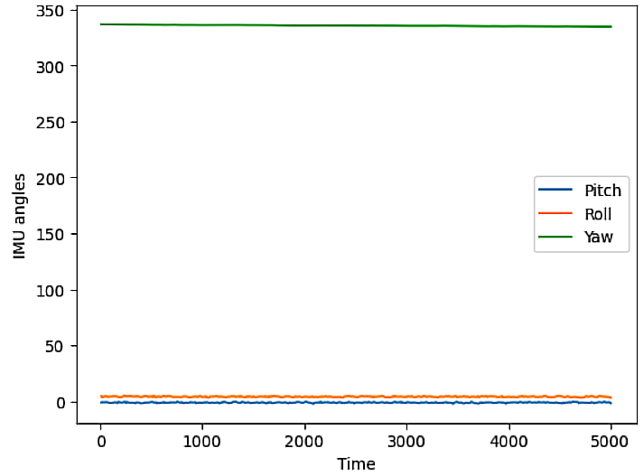
Lab 4
•Prelab
Connection Diagram
The following diagram shows only the two motor drivers wiring, and does not show the previous lab wiring with the sensors.
Battery Discussion
One of the specifications for our car was to have the Artemis and the two motor drivers hooked to separate batteries. The reason for this is because we want to power the two motor drivers as much as possible.
In doing so, we can ensure higher speed and also we ensure that the drivers and the Artemis are always powered independently for both voltage safety and to ensure that our code is consistently running.
•Tasks
Testing one Motor Driver
When testing my first motor driver, I decided to hook it up to a DC Voltage generator and an oscilloscope to check if the soldering connection I had were correct and especially to check what the output voltage would be.
According to my observation, and this can be seen also by the images below, the output to a motor will be approximately 10 times the voltage power from the battery (input of 3.7V will give an output of 37V) if it was to be hooked up alone.
So by rapid calculation, each motor will roughly receive 17-18V from the battery given. Below is also the snippet of code used to test the motor. The voltage output is based on the battery we will use for the drivers, which is approximately of 3.7V.
void setup() {
//Motor 1 --> left from front
pinMode(A1, OUTPUT);
pinMode(A2, OUTPUT);
//Motor 2 --> right from front
pinMode(A3, OUTPUT);
pinMode(A5, OUTPUT);
Serial.begin(9600);
}
void forward() {
//Motor 1 counterclockwise, Motor 2 clockwise
for (int i = min_speed; i < speed; i++) {
analogWrite(A2, 0);
analogWrite(A1, i);
}
}
void stop_forward() {
analogWrite(A1, 0);
}
Testing both Motors
The following video shows how both motors are able to run powered by the battery provided.
Car Layout
Lower limit PWM and Calibration
The next step in lab was to discover the lower PWM value limit in both scenario os going straight and curving. Some considerations I noticed while testing is that the car has an inherent mechanical limitation based on the internal gears condition.
So lower limit in PWM for other people in lab were not the same for me. After various trial on initial values, I ended up with a minimum inital PWM of 45 when going straight and of 120 when turning. I would need more testing on the turning value as I suspect my battery might have been low on power and therefore needing a higher value than needed.
The next step was to apply a calibration factor to one of the motor drivers to ensure a more effective pairing of the two. Via the same testing, I noticed that my motor driver 2 was receiving less power than the other driver. So I decided to apply the calibration factor on it and ended up with a value of 15 when going forward and a value of 10 when going backwards.
This is because I noticed that when going in reverse, the car had a greater drift than when going forward and I suspect is due to how the gears are shaped, preferring a direction compared to the other. No calibration seemed to be needed when turning, but I may implement one if necessary.
Open Loop Control
At last, I implemented some code for turning and implemented an open loop control.
void setup() {
//Motor 1 --> left from front
pinMode(A1, OUTPUT);
pinMode(A2, OUTPUT);
//Motor 2 --> right from front
pinMode(A3, OUTPUT);
pinMode(A5, OUTPUT);
Serial.begin(9600);
}
To send data fast enough, I decided to create two new commands. The first one, PID_DISTANCE_AIM, takes three variables (point_set, Kp, Kd).
The second one, PID_DATA, takes no variables but it is responsible to send time, distance measurements and pwm values back for graphing purpose.
To collect values, and later on send them, as fast as possible I implemented teh whole code in the main loop, which runs only when the Artemis receives the right command.
To implement this, I created a flag with an int value associated with it so whenever the command is received, the flag receive the right value to be able to run. This allows the Bluetooth to be supported the whole time.
To store as many values as possible for the graphs, I stored all data in arrays and then send it back on a second moment.
/*PID_DISTANCE_AIM*/
case PID_DISTANCE_AIM: {
// Extract the next value from the command string as an integer
success = robot_cmd.get_next_value(set_point);
if (!success) return;
success = robot_cmd.get_next_value(Kp);
if (!success) return;
success = robot_cmd.get_next_value(Kd);
if (!success) return;
start_time = millis();
last_time = millis();
TOF_one.startRanging();
case_n = 2;
digitalWrite(LED_BUILTIN, 1);
break;
}
//Inside the loop
// While central is connected
while (central.connected()) {
// Send data
write_data();
// Read data
read_data();
if (case_n == 2) {
if (millis() - start_time > data_duration) {
TOF_one.stopRanging();
motors_stop();
set_point, Kp, Kd;
start_time, index_PID;
distance, distance_last_one, distance_last_two;
time_last_one, time_last_two;
error_value, Kd_error;
speed, dist_flag;
last_time, last_distance, last_error;
case_n = -1;
digitalWrite(LED_BUILTIN, 0);
} else {
pid_distance_aim();
}
}
}
•Tasks
PID Discussion
Through various iterations, I developed a PD control system. As both graphs and video, show I managed to tune my PD controller to stop exactly at 1ft (304mm) from the wall.
My process was to increment Kp until I almost crashed the car, finding a value that would stop the car just before the wall (overshooting) and would reverse creating then an oscillation scenario.
I then introduced Kd, tuning until it would slow the car down when reaching the wall. I continued with the same process for different iterations to achieve better speed.
Additionally, I implemented the code so that the distance values used to calculate the PWM values would be updated depending on the ToF sampling rate.
If the sensor had a new measurement, the distance would simply be the sensor output, otherwise the distance would be calculated by linear extrapolation using the two most recent distance measurements from the sensor.
The linear extrapolation allowed me to speed up the car as we wouldn't be limited to just the PWM calculated whena sensor data was available.
Due to many issue with the Bluetooth disconnecting most of the time (unfortunately this issue is still going on), the following graph are just an example of what the ToF vs Time and PWM vs Time data are when the car drives.
As it can be seen, apart for the first measurements which are imprecise due to the ToF tuning, the ToF vs Time show an exponential settling around 304mm as the car gets nearer.
Similarly, the PWM values (which I called speed) oscillates positively and negatively (indicating forward and reverse) around the minimum PWM value I found, which is 45.
The two videos below show two occasions the car reached destination in two different places. For the videos, I used different PD values (Kp=0.28 and Kd=75 left, Kp=0.3 and Kd=45 right).
The two different performances indicate how important the environment is to be able to tune the machine, which is consistent in the same terrain but not in different.
My preferred setting were for Kp = 0.3 and Kd = 75, which yielded the most consistent and fastest results.
To send data fast enough, I decided to create two new commands. The first one, START_PID_STATIONARY, takes three variables (point_set, Kp, Kd).
The second one, STOP_PID_STATIONARY, takes no variables but it is responsible to stop the motors and send back time and angle measurements and pwm values via Bluetooth.
To collect values, and later on send them, as fast as possible I implemented the whole code in the main loop. When I send the first command, the implementation runs indefinitely until the second command is sent.
When the first command is sent, all variables are use to implement PD control and a flag is activated so to allow the code below to be sent forever. While it runs, also other Bluetooth commands are possible to be sent, like the PD control implemented in Lab 5.
For graphic purpose, when I send the second command all motors are turned off and all the data collected so far is sent back.
/*START_PID_STATIONARY*/
case START_PID_STATIONARY: {
// Extract the next value from the command string as an integer
success = robot_cmd.get_next_value(set_point_angle);
if (!success) return;
success = robot_cmd.get_next_value(Kp_angle);
if (!success) return;
success = robot_cmd.get_next_value(Kd_angle);
if (!success) return;
start_time_angle = millis();
last_time_angle = millis();
angle_stat_flag = 1; //flag for loop()
break;
}
/*STOP_PID_STATIONARY*/
case STOP_PID_STATIONARY: {
motors_stop();
send_PID_angle();
set_point_angle, Kp_angle, Kd_angle, angle;
start_time_angle, last_time_angle;
index_angle, error_angle, Kd_error_angle, last_error_angle;
speed_angle;
angle_stat_flag = 0;
break;
}
void loop() {
// Listen for connections
BLEDevice central = BLE.central();
// If a central is connected to the peripheral
if (central) {
Serial.print("Connected to: ");
Serial.println(central.address());
// While central is connected
while (central.connected()) {
// Send data
write_data();
// Read data
read_data();
if (angle_stat_flag) {
pid_stationary();
}
//rest of loop()...
}
Serial.println("Disconnected");
motors_stop();
angle_stat_flag = 0;
for (int i = 0; i < 2; i++) {
digitalWrite(LED_BUILTIN, !digitalRead(LED_BUILTIN));
delay(1000);
}
}
}
•Tasks
PID Discussion
Through various iterations, I developed a PD control system. As both graphs and video show, I managed to tune my PD controller to always come back to a decided angle I request even when moved by external forces. The decided angle for these tests was zero.
My process was to increment Kp until it started oscillating, finding a value that would almost stop the car but the momentum would make teh car keep going (overshooting).
I then introduced Kd, tuning until it would slow the car down when reaching the indicated angle. I continued with the same process for different iterations to achieve better speed and accuracy.
I implemented the code so that the angle values used to calculate the PWM values would be updated depending on the IMU sampling rate, using the yaw value calculated through the DMP process to minimize drift. This resulted in very effective and precise measurements, although showed a built in biased at the beginning of measuring.
What I noticed was that the car would start measuring yaw at zero degrees but would keep increasing until settling around 3-5 degrees giving a constant biased. To mitigate this behaviour, I added a tolerance factor for which the car would not move if the angle was within that tolerance.
Reported below are the graphs for Angle vs Time from the IMU and PWM vs Time calculated for each new angle measured. In the first image, each spike represent a kick or movement of the car from the desired angle we want it to point (in this case 0 degrees). Each spike can either be positive or positive depending if the kick was right or left, and to recover from the spike the car gets back to its original position, plateauing at the desired angle.
On the second image we can see that for each spike we had we have a spike on PWM values, which with the same behavior settles back to initial condition. To notice that for my car the minimal PWM value to move the car is 100.
The following video shows the behavior before explained.
For this lab, we were tasked to develop an efficient Kalman Filter for our car. Since the hard task, we started by implementing and tuning the Kalman Filter on Python using Lab5 data collected previously.
Drag and Momentum
The first step was finding the drag and momentum of the car. From the data I collected in Lab5, I started by plotting a Velocity vs Time graph. This was done to observe around what value the velocity would be at steady state.
Below here is the velocity graph I got, and based on the general shape I observed it follows an exponential trend which reaches steady state in between the red lines. From this informations, I calculated the steady state speed to be -0.2337m/sec.
This value would be very important because it would have repercussions on the Arduino implementation of the Kalman Filter.
Using this velocity and the corresponding PWM value at steady state (63), I compared data and calculated the time at 90% to be 2.024sec. Using this 3 data, I calculated drag and momentum to be:
The next steps were to calculate the A and B matrix using the d and m values found. We use those matrices to then calculate their discretized version using the sampling time from the loop of my Arduino program.
This is fundamental as we want to program the Kalman Filter to be fast as our loop. Moreover, I also initialised the C matrix, the initial guess for the state vector and the covariance matrices for process and sensor noises. Here below are reported with also their values.
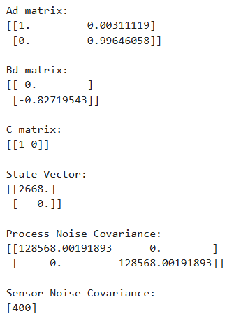
Implementation
Now it is the moment to implement the actual Kalman Filter. Starting from the demo code provided, I implemented the Kalman Filter as shown in the image below. Additionally here reported are also images for the output of my Kalman Filter depending on different parameters.
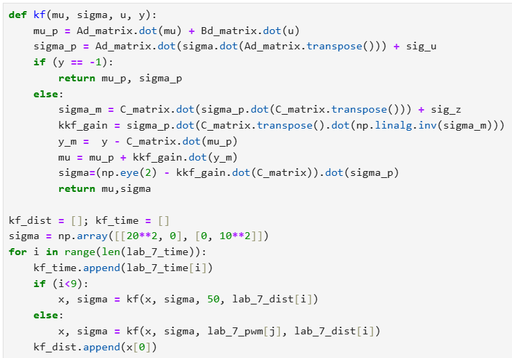
This graph on the left is obtained with the default parameteres found before. The middle graph is obtained with the sensor noise covariance extremely high, showing more trust on the model. The right graph is obtained with the process noise covariance extremely high, showing more trust in the sensor meauserements.
•Kalman Filter in Arduino
Kalman Filter in Arduino
Now that we have a functioning Kalman Filter, I implemented it on Arduino using the BasicLinearAlgebra library. Setting up the same matrices explained before, I ran the car and see its behavior.
The following graphs are the Distance vs Time and PWM vs Time using the Kalman Filter to speed up the distance calculations. The video illustrates the car behavior.
As you can see in the first graph, the line representing the distance measurements oscillates once it reaches the goal distance. The reason for this behavior is that even if we reached the desired goal, the Kalman Filter still tries to getr closer to the wall following the same trend (decreasing values) which led us here.
When then it receives a ToF measurement, it snaps back into place as we gave more trust to our measurement. From the video, the car doesn't move while in this state although the motors try to since they are still receiving some non-zero pwm values.
Another challenge I faced during this lab was tuning the right values for the matrices of the Kalman Filter. As mentioned before, the critical adjustment I had to do was to tune better my steady state velocity calculations, as it then propagated in the B matrix.
Through testing, I found a progressively lower speed, lowering than the value of the B matrix increasing the accuracy of my predictions in between ToF measurements.
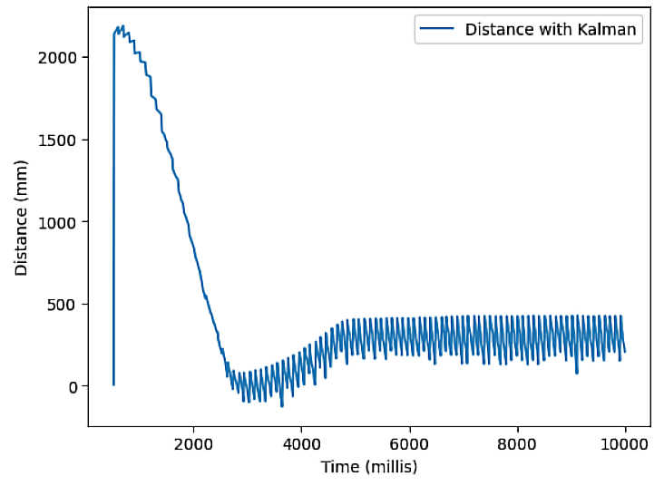
Lab 8
•Flip Stunt
For this lab, we were tasked to perform a stunt with our car using all the infrastructure we have built so far. The stunt I decided to perform is a flip.
The car would run forward full speed, with the ToF sensor and Kalman Filter outputting the current distance from teh wall we were. Thanks to that data, I would reverse at full speed to initiate the flip and come back to the starting point.
The were different ways to complete this stunt, but I found the easiest and most straightforward to keep it open-loop for its entirety. So both going forward and backward would be at max speed, with a time constraint to avoid crashing into object when coming back.
I did plan to add PD control for the way back, but it resulted difficult to implement within the lab time.
Here below is the code I used, with also graphs showing the Distance vs Time and PWM vs Time during the whole stunt. The first graph presents the same issue explained in Lab 7, which is the oscillating behavior of the Kalman Filter. The second graph shows perfectly when the flip occurs, as the negatuve PWM value represents the reverse motion after the flip.
Most importantly, here are three well done flips and one blooper at the end for your enjoyment. By analysing the best run (the first one), my car travelled 1.8m (6ft) in 1.13sec for a speed of 1.59m/sec.
For this lab, we were tasked to map a world build within the lab. We were tasked to place our car in decided checkpoints and spin our car as slow as possible.
While spinning, the car would collect ToF measurements and by computing them later on Python we would construct our environment.
PD Orientation
To achieve the in place rotation, I decided to implement a PD control based on the yaw measurements from the DMP.
The PD control would check the current yaw angle and the desired angle, picked after we are done collecting distance measurements from a preset array, and set teh PWM value to turn accordingly.
My robot was programmed to turn every 10 ToF measurements every 24 degree (0, 24, 48, etc.). The choice of using a preset array for the desired angles was to overcome the fact that the DMP wraps the angle around after passing 180 degrees.
The PD control is programmed to always turn clockwise with a minimum PWM value being the minimum limit found in Lab 6.
Below here is the code used for the PD Orientation and a video showing the car moving.
void mapping_process() {
if (!map_done) {
icm_20948_DMP_data_t data;
myICM.readDMPdataFromFIFO(&data);
// Is valid data available?
if ((myICM.status == ICM_20948_Stat_Ok) || (myICM.status == ICM_20948_Stat_FIFOMoreDataAvail)) {
// We have asked for GRV data so we should receive Quat6
if ((data.header & DMP_header_bitmap_Quat6) > 0) {
double q1 = ((double)data.Quat6.Data.Q1) / 1073741824.0; // Convert to double. Divide by 2^30
double q2 = ((double)data.Quat6.Data.Q2) / 1073741824.0; // Convert to double. Divide by 2^30
double q3 = ((double)data.Quat6.Data.Q3) / 1073741824.0; // Convert to double. Divide by 2^30
// Convert the quaternion to Euler angles
double q0 = sqrt(1.0 - ((q1 * q1) + (q2 * q2) + (q3 * q3)));
// yaw (z-axis rotation)
double t3 = +2.0 * (q0 * (-q3) + q2 * q1);
double t4 = +1.0 - 2.0 * (q1 * q1 + (-q3) * (-q3));
angle = atan2(t3, t4) * 180.0 / PI;
}
}
error_angle = set_point_angle - angle;
Kd_error_angle = (last_error_angle - error_angle)/(last_time_angle - millis());
last_error_angle = error_angle;
last_time_angle = millis();
speed_angle = Kp_angle*error_angle + Kd_angle*Kd_error_angle;
if (speed_angle > 255) {
speed_angle = 255; //limits speed output
} else if (speed_angle < min_speed_turn) {
speed_angle = min_speed_turn;
}
if (int(error_angle) <= tol && int(error_angle) > (-tol)) {
motors_stop();
} else {
turn_right(speed_angle);
}
Now that I have my data, I saved everything in CSV file divided by point of interest. I then processed both angle and distance measurements from each of the point in the same way.
Modify angle measurements by applying an offset and change in orientation (angle = 90 - angle).
The -1 factor aligns with a counterclockwise rotation of the car (like in the example in Lecture 2) which is the opposite of the rotation of my car which is clockwise.
The addition of 90 degrees offset is to align with the example in class, which we can see teh car is turned 90 degrees compared to the world frame.
This step is fundamental for later steps as it aligns my car's gyroscope orientation with the example in Lecture 2 and allows me to use the exact same transformation matrix.
Compute the theta value (in radian) for each angle measurement.
Transform the distance measurements in the world frame using Transformation Matrices. Each point has different T Matrix, as the translation portion of it differs for each checkpoint.
Here below is an example for the point (-3,-2) of the process I followed. It is the exact same method for each point, the only difference is the different offset applied in the T Matrix (last column first two entries).
Here are the resulting Polar Plots and Cartesian Plots for each checkpoint and the final map in which I combine all Cartesian Plots (with indicated also the lines used to draw the map over it).
Plots for point (0,0).
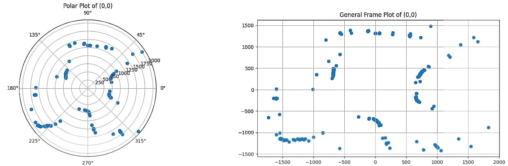
Plots for point (0,3).
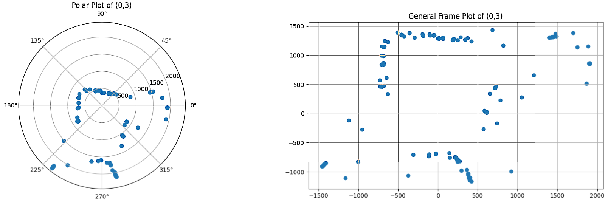
Plots for point (-3,-2).
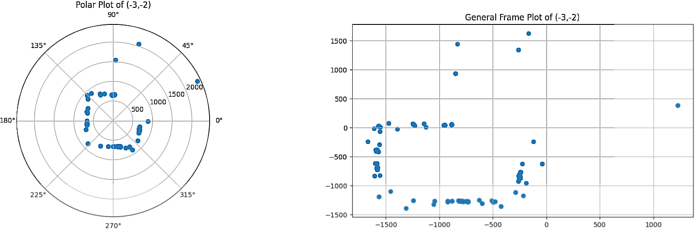
Plots for point (5,3).
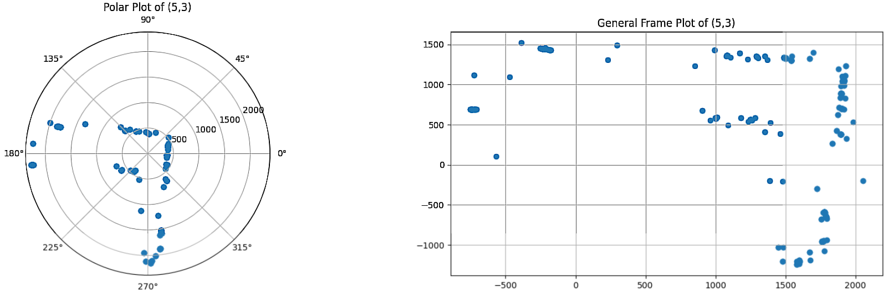
Plots for point (5,-3).
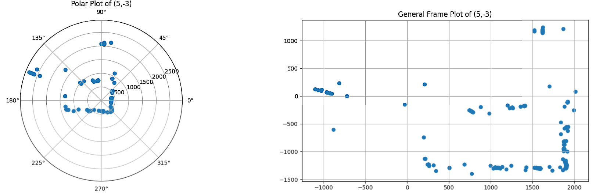
Final plot with all points data.
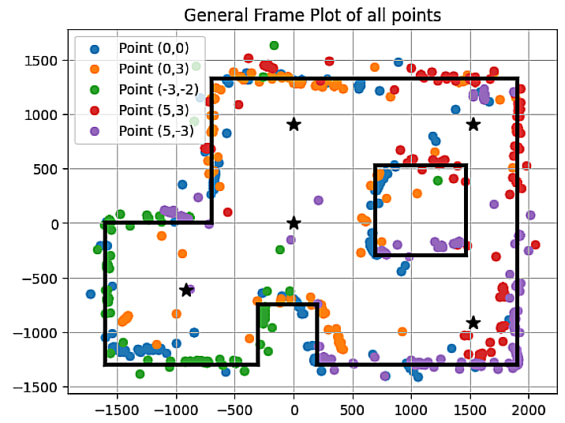
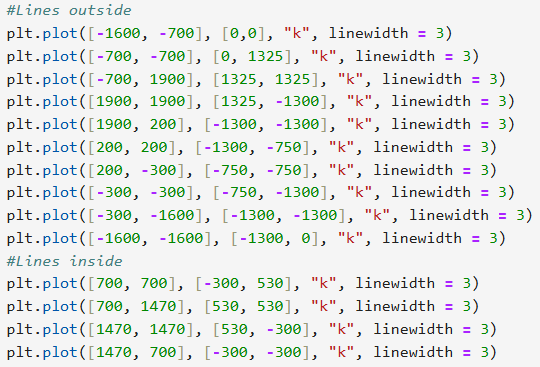
I've been helped by many TAs and by looking at Mikayla Lahr Webpage.
Lab 10
•Simulation Through an Environment
For this lab, we were tasked to move through a world using a Bayes algorythm. We were tasked to develop the notebook with the functions provided, run the simulation with such functions and record the results.
Compute Control
The first function was compute_control, used to extract the control information based on the odometry model by using both current and previous poses. Here is the implementation.
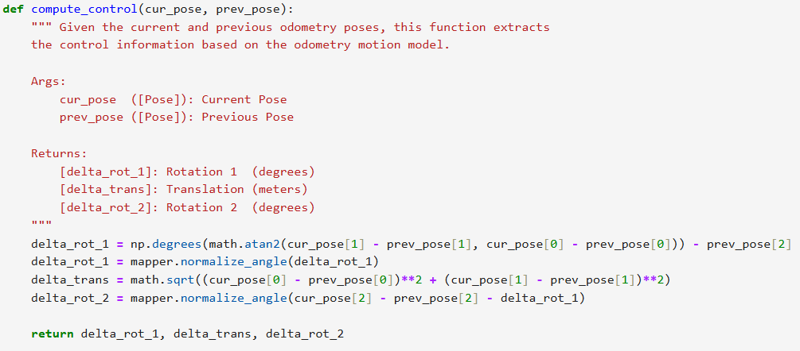
Odometry Motion Model
The next function was odom_motion_model, used to compute the probability associated to compute the new belief in the prediction step. It uses both current and previous poses (to use then in compute_control) and the previous control data. Here is the implementation.
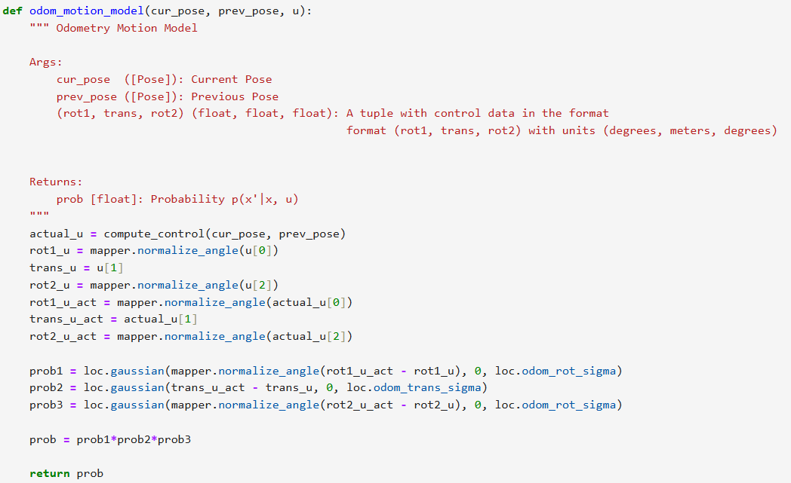
Prediction Step
The next function was prediction_step, used to calculate the belief after taking into consideration all cells before and all necessary cells after taking action. It updates poses and believes. Here is implementation.
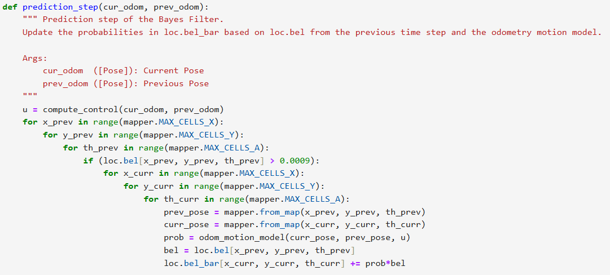
Sensor Model
The next function was sensor_model, used to create a gaussian probability for each angle observed by the sensor. This information is then used to update our new position in the space. Here is the implementation.
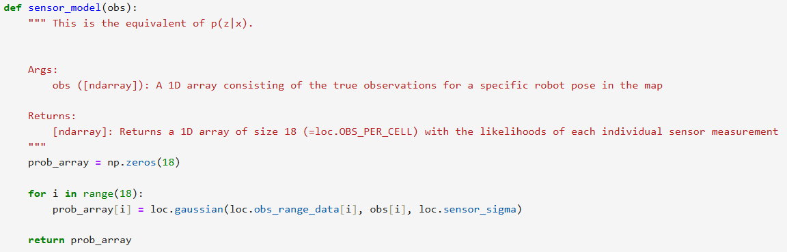
Update Step
The last function was update_step, used to update our belief on where we are in the space based in sensor model measurements. Here is the implementation.
Threshold Value
As part of my testing process, I started testing with different thresholding parameters to see what its effect would be. I did 3 runs, one with 0.0001 (default value), one with 0.001 (higher value) and one with 0.00001 (lower value).
Although the belief traced in blue was fairly similar for all three, one critical difference was the amount of points traced along the path, dimishing as the threshold gets smaller.
Here are the videos showing the simulation at work.
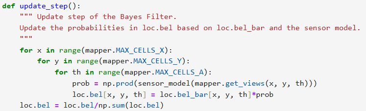
Default thresholding value.
Higher thresholding value.
Lower thresholding value.
I've been helped by many TAs and by looking at Mikayla Lahr Webpage.
Lab 11
•Simulation in Real World
For this lab, we were tasked to move through a world using a Bayes algorythm like in lab 10. Once we have established it worked as intended, I then trascrived the necessary to work on it.
Simulation Results
As the image shows, the simulation run for this lab is quite promising as the belief path (blue) follows well the trajectory path of the robot (green).
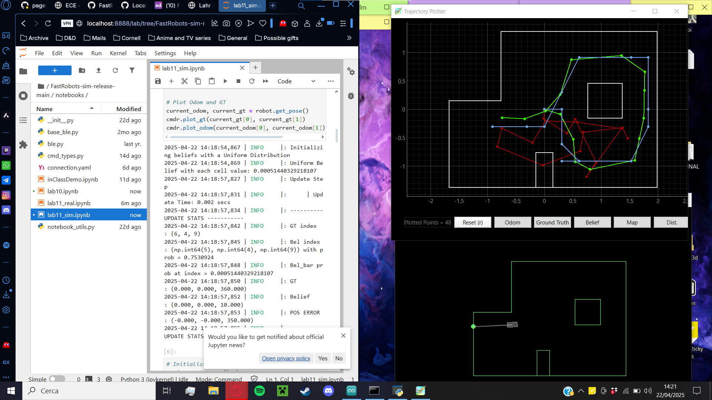
Perform Observation Loop function
The next step was to apply the Bayes Filter to the real robot. And to do so, I needed to develop the function perform_observation_loop.
The function, written below here, is the same I implemented in Lab 9 in which I make the robot spin in its place taking ToF measurements to establish where we are within the environment.
The major change I needed to implement was making sure the arrays were in the right dimensions using the tip given (np.array(array)[np.newaxis].T) where array is my angle data.
To ensure that the Python program would still run despite getting data from the car, I used the async module to run it concurrently following the steps given in the handout.
Additionally, my implementation of the car spinning accounted for a slockwise rotation, so I adjusted my angle data to be turned into counterclockwise.
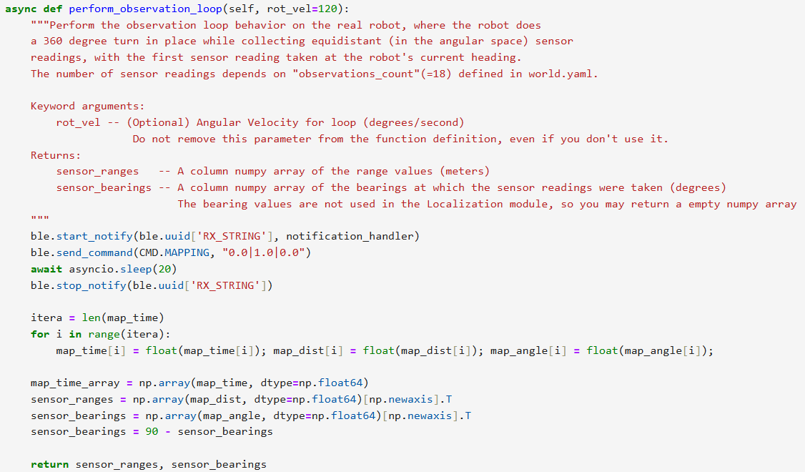
Results on the car
Here below are all the resulting image after running the Bayes Filter on all four points. From the images, we can see that my localization code works since we can see a belief plot in the map.
The reason for the constant error in position of the belief is most likely due to the ToF measurements being unreliable.
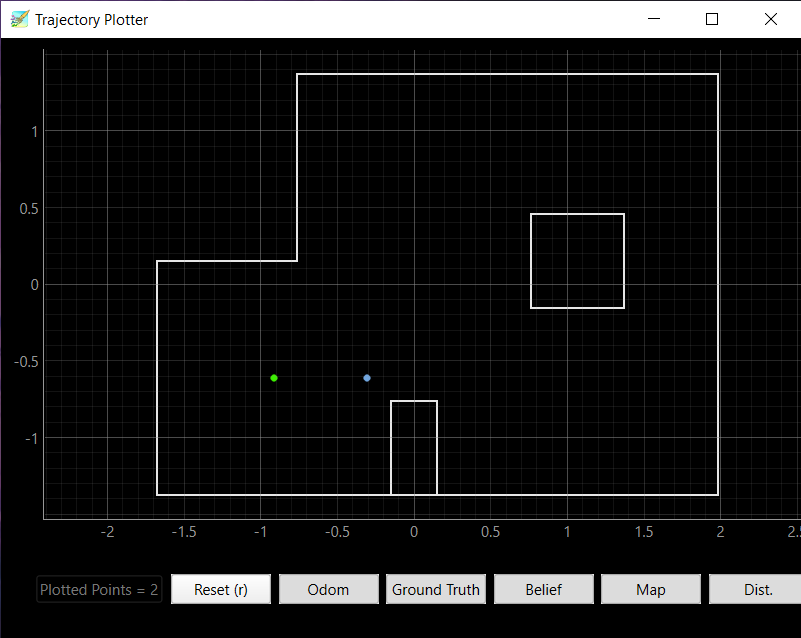
Point (-3, -2).
Point (0, 3).
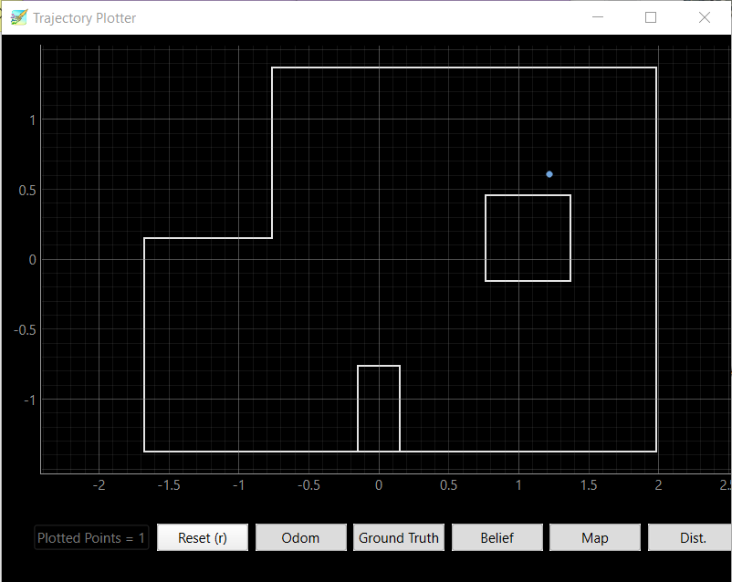
Point (5, 3).
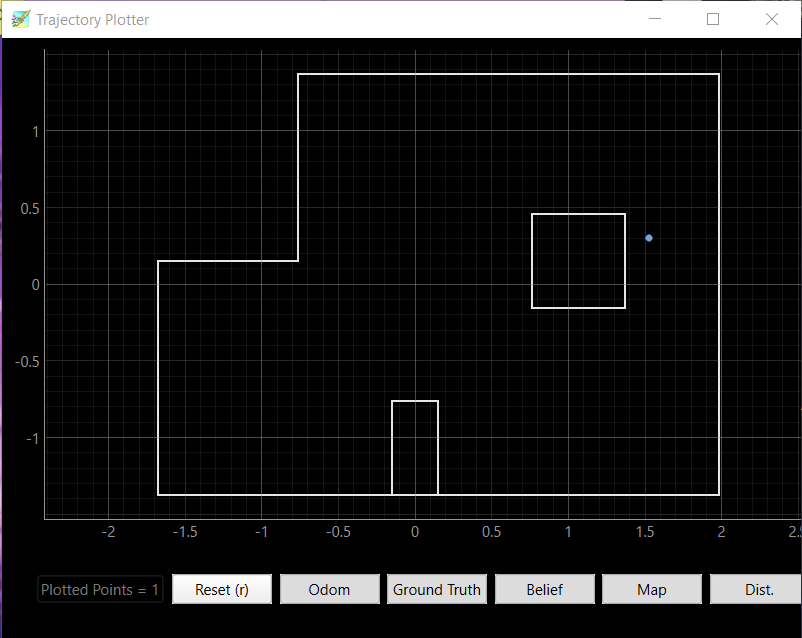
Point (5, -3).
I've been helped by many TAs and by looking at Mikayla Lahr Webpage.
Lab 12
•Path Planning within the environment
For this lab, we were tasked to move through a world following specific waypoints which we were told beforehand. The nature of the lab was very open ended, so in the next sections I will explore the various strategies, challenges and further implementations related to this lab.
Chosen Method
First thing I needed to consider was which method to use to develop my program. The first approach I had was to develop a while loop in Python in which I would call, in this order, Localization, PID Orientation and PID Linear. This method would work in my opinion because I would take into account where in the world my car would be to make the next moves in orienting it and direct it to the next waypoint.
This method allowed me to re use Lab 5, Lab 6 and Lab 11 functions and code I developed. Very soon in testing, this method resulted inefficient as my Lab 11 code for Localization never placed me anywhere near the physical location of the car. My suspicion was on a faulty ToF sensor, but due to the lack of time for other classes I just didn't have time to debug this issue which carried on from Lab 11.
I therefore decided to carry on with just the PID controls, which if tuned well would give me the best outcome to have a fully autonomous car running through each waypoint. I then started implementing the same while loop structure, skipping just the Localization aspect as not contributing in anyway to the path planning.
Code implementation
Decided with my strategy, I then started coding the necessary steps and, more importantly, variables needed for my program. The very first step I implemented was to code all the waypoints of the trajectory within Jupyter Lab. This was extremely useful to keep track for me were I needed to go in the right units (millimeters). Additionally, I used this information to code how many waypoints I needed to hit, to track at which of them I was and to calculate other variables useful for my functions like angles between them and distance from the walls. The next calculations were in fact for those parameters. Since we know what the points are, I calculated the line function passign through them and acquired their slopes. I then calculated the angles between them following this formula:
angle = arctan(|(m_1 - m_2)/(1 + m_1*m_2)|)
where m_1 is the slope of the line where our car is currently and m_2 is the slope of the line where our car needs to face. Using then the real world map in lab, I roughly calculated the distance from each waypoint to the wall that would be in front of the car as it approached it.
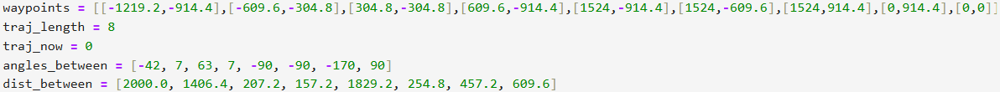
While loop implementation, tuning and testing
Once all the parameteres were ready, it was the moment to implement and test the code. As the image below shows, the while loop run for as many waypoints as there are and runs the PID Orientation first to orient the car towards the next waypoint and then the PID Linear to get there.
The four main functions are the same used for Lab 5 and Lab 6. START_PID_STATIONARY and STOP_PID_STATIONARY respectively start and stop the PID Orientation use to get to a specific angle (taken from the ones I calculated) based on the yaw measured from the IMU and analysed by the DMP in the car code. PID_DISTANCE_AIM and STOP are functions that respectively start and stop the motors of the car to reach a set point calculated by me. This set point is the distance that the ToF should measure to indicate its distance from the wall. Throughout the code, I implemented many asyncio.sleep() with various times to allow the commands to operate without any interruptions from the other. Finally each of them were implemented using all PID parameters. Originally I also used the Integral term but as testing went on I realised it was not needed for efficient control, so I just set it to 0 throughout.
The next step was to tune each function. I started with the PID Orientation and I noticed as I went on testing that each waypoint would use the same tuning except the last two waypoints. This difference it's because the last two are edge cases. From the top left corner, I needed to point in the -180 degrees, which implied the risk to overshoot the PID control and wrap around the yaw angle measures. This happened quite a lot, which is why I implemented this section (traj_now == 6) as shown in the image. Instead of targetting -180, I targetted -170 as the direction would be similar enough and changed the tuning parameters to allow a slower rotation. For the next waypoint (traj_now == 7) was a similar situation as from -170 degrees I would need to go to 90 degrees, which based on my code would be rotating clockwise with higher momemtum than by going counterclockwise.
Additionally in both occasion I started the motors in the previous position so to avoid motor winding, which is a challenge I talk in the next section.
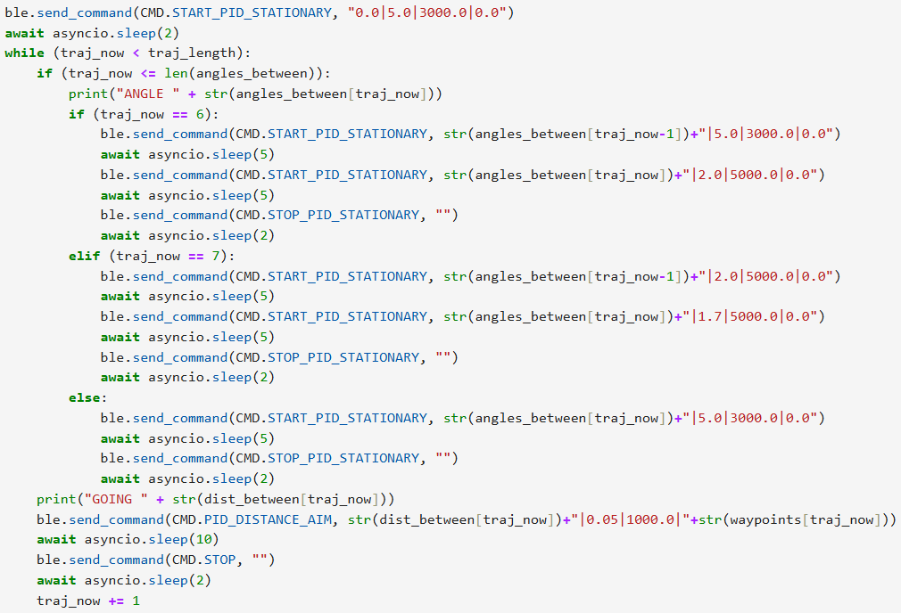
Challenges and Limitations
Localization
As mentioned before, from Lab 11 I didn't manage to get a good localization system. I suspect this is due to a issue within the ToF sensor and to the mapping code I used on my car. But in the interest of time and to get a good path planning running on my car, I decided to not include this part. With more time, one implementation I would do is to do more testing on the ToF sensor and narrow down the issue.
Motor Wind up
One particular issue that this car has is the overclocking that the motors undergo anytime I send any high PWM. This wind up causes the car to spin on itself very rapidly before stabilising around the desired angle. Although I kept this feature for most of the waypoints as not impeding and actually useful for micro adjustment in position, this spin became very complicated to dela with for the very first point and the last points of the trajectory. These points needed a very controlled intia spin so to not drift too much apart from the desired position or even reset or corrupt the yaw readings from the IMU, leading to uncontrollable spins. To fix this issue, I learned from other students that I would need to send a small PWM value to the motors to "activate" them before changing the desired angle and therefore increase the PWM output.
Within my code, I implemented this by adding START_PID_STATIONARY functions aiming to the angle the car is already oriented towards, therefore not changing anything within it but still activating the motors. This became extremely useful for the final points, as before doing that I would always overshoot and lose control of the orientation with even the smallest PID control parameters.
An example of the motor winding when overshooting the desired angle. The fast spin had the effect of "resetting" the zero position of the yaw as in the video the car should have stabilised at -90 degrees to respect the world zero.
Drifting
Another challenge I initially had with my car was drifting when switching from Orientation to Linear PID. This phenomenon was due to the carried momentum that teh car and motors had when switching commands. To avoid this effect, I added functions like STOP_PID_STATIONARY and STOP that would send a PWM value of 0 to the motors to allow to basically reset the car once in the correct orientation or position.
Battery Dependency
A huge challenge faced not only for this lab but in general it's how battery dependent this car is. From tuning the PID parameters to testing angles and distances variables, each run of the car is slightly different from the previous ones only based on the percentage of the battery for the motors. To partially overcome this issue, I only tuned my PID parameters with a fully charged battery. Once those parameters were decided, I then started testing the otehr variables, taking in consideration what battery percentage I probably was at. The main effect of this was seen in the PID Orientation, which usually drawed more power than the Linear one. My parameters and variables are tuned to sustain a battery up to more or less 50% (based on only guesses from me) but more importantly are tuned so to aim for the tile in which the waypoint is instead of the exact center of it.
This is because if I instead aimed for the actually center, my precision would have worked only for a limited window of battery charge. I decided to compromise total accuracy for more testing time and repeatability of the path.
I2C Hanging
One weird behavior I experienced was I2C from the IMU failing to send back information and therefore stopping the PID Orientation as if looping in an empty loop. I'm not sure if this was due to a timing issue within my code or a faulty physical connection in the car, but since I didn't experience it too often I didn't investigate too much. With more time, I would have investigate more teh issue and test further.
An example of the I2C connection from the IMU faulting mid orientation. In the video, the car is about to orient itself at 0 degree but the orientation stops almost immediately due to loss of data transfer via I2C..
Results
At the end, the lab was a success. My code managed to successfully lead the car from the start to the end independently. Here below are the videos of my three best runs. It is important to notice that only one run was completely undisturbed and smooth, as the other two were to some degree adjusted by me. This is again because of the battery dependency, as in fact the adjustments were of 1-2 degree in only one of the waypoint. Overall, the planning program is very accurate and repeatable in following the trajectory requested. Additionally between runs, each waypoint was reached and aimed very precisely, highlighting the precise tuning I landed on.
Best run. The smoothest and without any adjustment.
Second best run. Almost perfect but a small adjustment needed due to a small angle misalignment.
Third best run. Almost perfect but a small adjustment needed due to an overshoot towards the end.